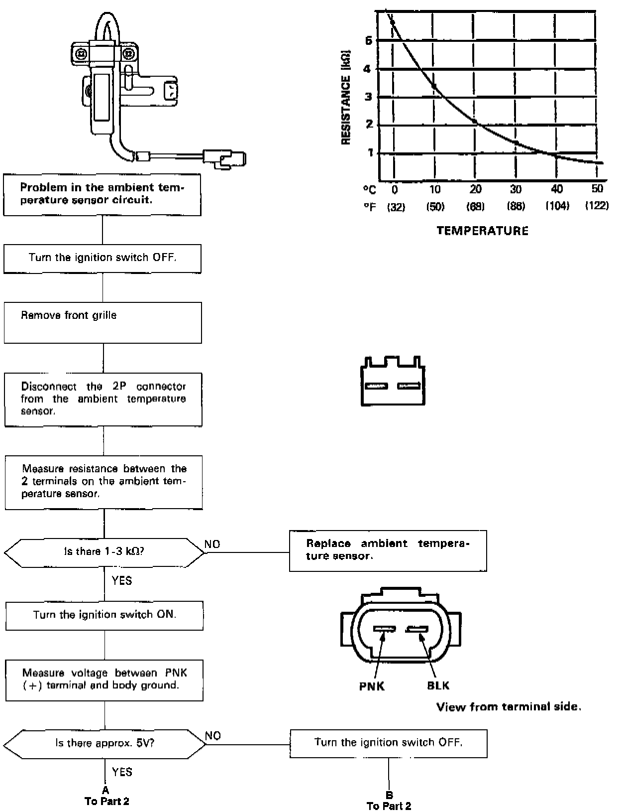
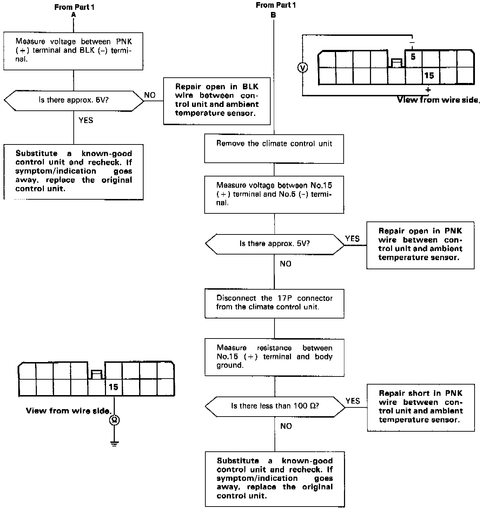

Sedan
Self-diagnosis indicator light G comes on: Indicates a problem in the Ambient Temperature Sensor Circuit.The ambient temperature sensor is a temperature dependant resistor (thermistor). The resistance of the thermistor decreases as the temperature outside the car increases.

